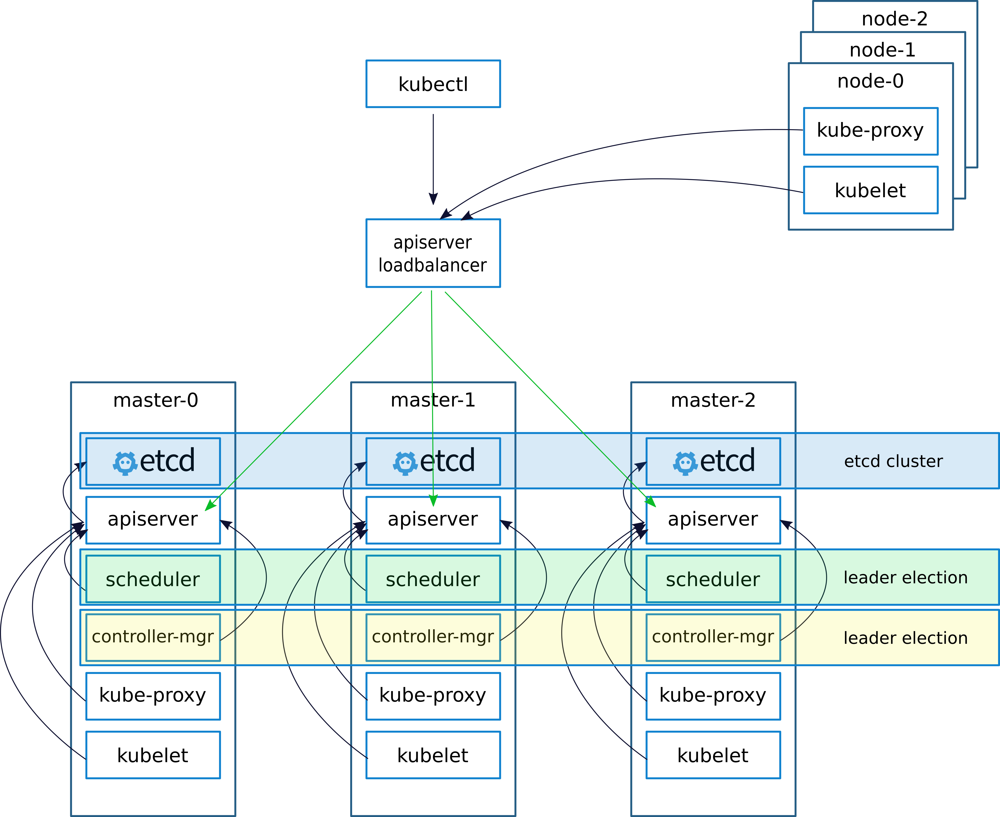

k8s关键组件及其高可用方案
如今，业务上云已经不是什么新鲜事物了，容器云也已在大大小小的公司实现落地，而kubernetes（k8s）也已登上容器编排调度的霸主地位…
如何搭建高可用k8s集群
如今，业务上云已经不是什么新鲜事物了，容器云也已在大大小小的公司实现落地，而kubernetes（k8s）也已登上容器编排调度的霸主地位。越来越多的企业开始部署k8s集群，无论是业务应用还是中间件服务，甚至分布式计算任务，k8s集群都能轻松驾驭，然而，企业场景下稳定并且高可用的k8s集群部署也并非毫无挑战，这篇文章就根据笔者参与的企业级容器云建设项目，分享几点高可用k8s集群搭建的经验。
何谓高可用
高可用对于底层的IT基础设施来说是基本要求，这意味着云基础设施三个方面的需求：
- 容错：即使出了一些错误（无论是天灾还是人祸），底层系统依旧工作
- 服务可用：跑在云上的服务必须一直是可用的状态
- 数据安全：云上的数据确保健全、可用
那么在设计上，我们就得要求“no single point of failure”：路由、防火墙、负载均衡、反向代理以及监控系统等在网络和应用层面上必须全部是冗余设计，以此来保证最佳的可用性。 下面，浅谈一下k8s高可用集群是如何组建的。
k8s关键组件及其高可用方案
首先，看一下架构设计（参考资料2），图中已经将高可用k8s集群各个组件的功能以及通讯调用关系清晰的展示出来了，下面我将分别从管理平面、执行平面和数据平面三个部分来简单说明一下该高可用架构方案以及各个组件的功能。

管理平面
apiserver:
apiserver是k8s集群的入口，为了使用方便，kubectl作为其客户端供用户使用。为了实现高可用，在3个机器上分别以静态Pod的方式部署了apiserver并挂载在同一个loadbalancer上，如此，其与其他组件的联系都经由这个负载均衡器来做转发（图中黑色连线），这样也保证了每一个用户命令都有且仅有一个apiserver来响应，并且理论上只要还有一个Pod是可用的，该组件的服务就没有问题，再加上k8s的Pod有自愈能力，apiserver高可用可以说是能够保证的。这里多说两句，k8s的API至关重要，而一些针对k8s做的二次开发其实也主要是围绕着k8s声明式API做一些CRUD，而面向API编程也是你从k8s用户向玩家进阶的必经之路。
controller managers: k8s自愈能力的关键所在，
controller managers提供一种reconciliation的功能，简单来说就是该组件会无限循环地去通过apiserver来查看api资源的状态，并将其实际状态转变为api资源声明中的状态。比如，一个deployment设置了replicas为3，而由于某些原因集群中运行了5个这样的Pod时，controller managers就会触发工作并且调用api来删除2个Pod。同样，在k8s的master节点上，每个节点以静态Pod部署一个组件以达到高可用的目的。scheduler: 该组件负责集群内部Pod的调度，主要根据集群node资源情况来平衡每个node的任务量，此外，还支持用户对Pod调度的自定义限制规则，比如NodeSelector、affinity规则等。该组件的高可用部署方案也是在每一个master节点上部署一个静态Pod。
组件
controller managers和scheduler的选主是通过etcd来实现的：当一个副本不能工作时，其余副本会更新endpoint至etcd，而etcd只会接受其中一个更新请求，从而实现leader election。至于为什么需要选主，这里就留作一道思考题好了。
执行平面
执行平面针对的就是node/slave节点，这里实际上就没有高可用一说了，即便如此，还是简单介绍一下图中出现的几个组件吧。
- container runtime: 每个节点都需要一个容器运行时来执行容器，比如Docker。非pod启动。
- kubelet: 用于执行apiserver下达的命令，也可以重启启动失败的pod。
- kube-proxy: 通过修改
iptables来达到网络代理、负载均衡的效果，在k8s中以Service作为代表。比如在使用NodePort进行对外提供服务时，所有node/slave节点都会生成特定的iptables，当该服务被删除或者节点断网时，iptables也会被清除。
数据平面
etcd
- 对于高可用集群来说，集群的数据至关重要，Kubernetes将
etcd作为数据存储中心，其存储了所有集群相关的信息，比如：pod、node、cm… 鉴于底层系统的高可靠性，数据决不能丢。 - 如图所示，
etcd在每个master节点上部署了一个实例，以保证其高可用性，实践证明，etcd挂载本地ssd的方式会大幅提高超大规模（节点大于2000）集群性能（参考资料6）。 etcd官方给的部署模式是奇数个（大于等于3）就好了，推荐部署5个节点，这就不得不提etcd的选主协议/逻辑/算法Raft，这里有个非常生动的动画值得一看。此外，还需要注意的是所谓“脑裂”问题，这里的“脑裂”是指etcd集群出现两个甚至多个leader，如果你也是这样理解脑裂的，那就大可放心使用，因为there is no “split-brain” in etcd。- 默认的etcd参数不太适合disk io比较低的场景，由其是在测试环境，所以可以调优一下：
1
2ETCD_ELECTION_TIMEOUT=5000 #default 1000ms
ETCD_HEARTBEAT_INTERVAL=250 #default 100ms
总结
- 部署高可用k8s集群对于企业级云平台来说是一个根本性的原则；
- 容错、服务可用和数据安全是高可用基础设施的关键；
- 文中简单介绍了部分k8s组件，实际上还有一些必须组件，如：网络插件、DNS插件等
- 对于Business来说，高可用并不仅仅是一个集群就可以做到的，更复杂的还有如多网络域部署甚至异地多数据中心部署。
参考资料
- https://www.criticalcase.com/blog/5-reasons-why-you-need-high-availability-for-your-business.html
- https://elastisys.com/2018/01/25/setting-highly-available-kubernetes-clusters/
- https://coreos.com/etcd/docs/latest/op-guide/failures.html
- https://kubernetes.io/docs/tasks/administer-cluster/configure-upgrade-etcd/
- http://thesecretlivesofdata.com/raft/
- https://openai.com/blog/scaling-kubernetes-to-2500-nodes/